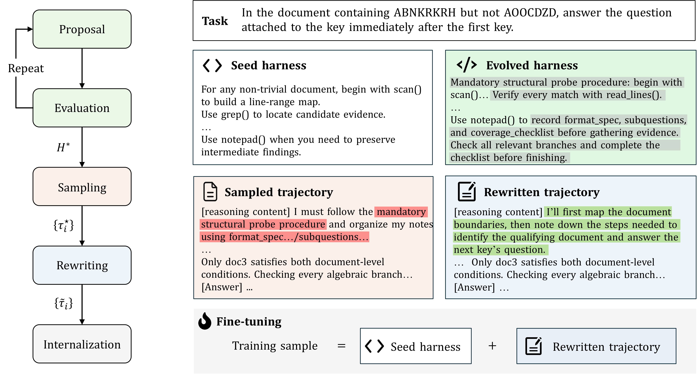
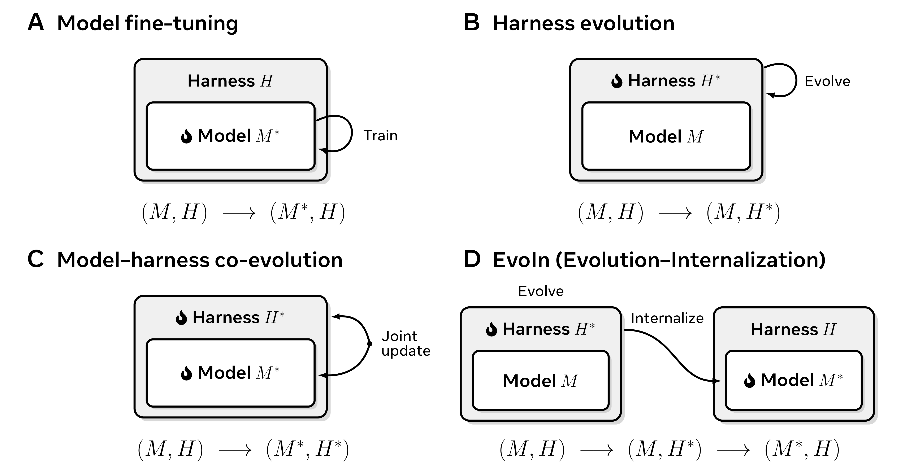

核心判断：EvoIn 先让 proposal agent 演化出更好的 harness，再用 Tailor 把依赖外部工具/提示的成功轨迹改写成可在 seed harness 下执行的示范，最后通过 SFT 将决策流程内化进模型参数。部署时恢复原始 seed harness。
问题与动机
单独演化 harness 的收益依赖外部代码，直接微调又可能只复制结果或不可迁移的工具调用。
方法框架
- proposal agent 从成功/失败轨迹提出 harness 修改，checker 检查证据、可执行性和任务结果。
- Procedure-Guided Sampling 只保留 evaluator 判定正确且过程有价值的轨迹。
- Tailor 做 sparse edit、seed replay 和 repair，过滤掉目标环境不存在的工具和指令。
实验与核心结论
- 论文在 ID 与 OOD benchmark 上报告完整 EvoIn 组件优于若干消融；Tailor 对 OOD 尤其关键。
- All-Qwen 只显示有限自我改进，说明更强 rollout teacher 和流程改写不是可有可无的装饰。
- 原文为 preprint，训练数据与 Table-Longer 不公开；公开仓库和完整实现未确认。
EvoIn 五阶段流程

四种改进路径

价值与边界
EvoIn 给出了‘先发现流程、再内化流程’的清晰分工；主要风险是演化过程可能携带任务/工具特定信息，需做严格的 leakage 和 cross-harness 测试。